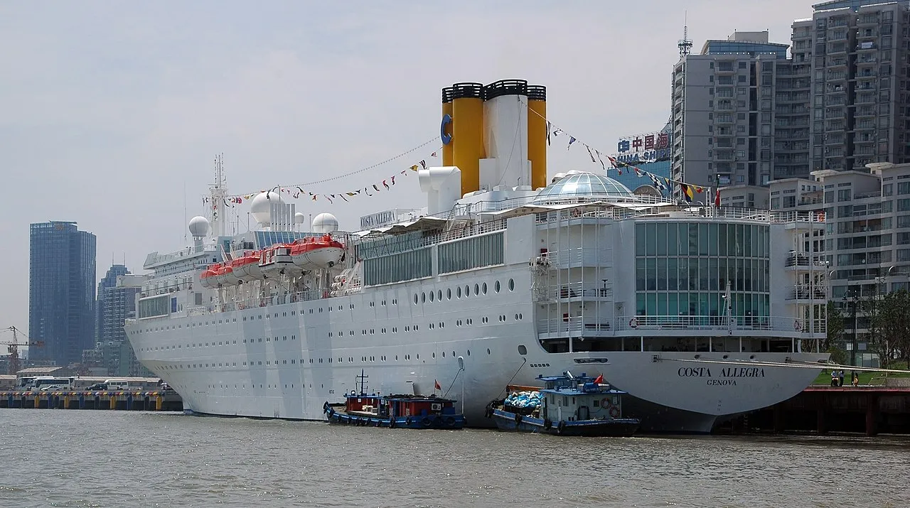
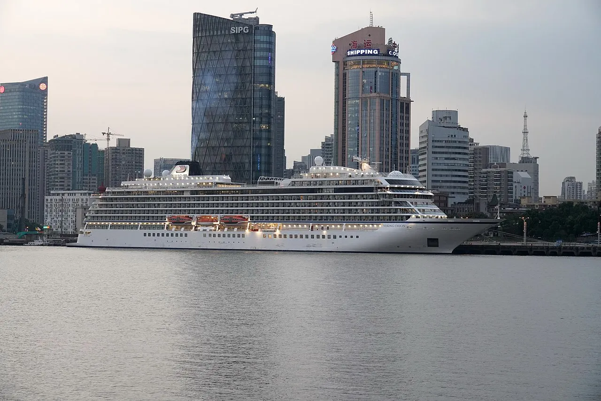
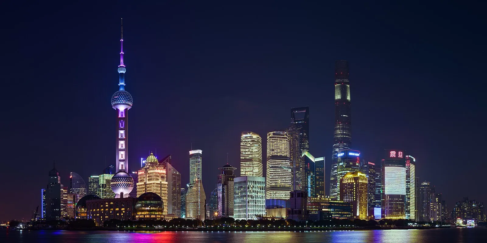
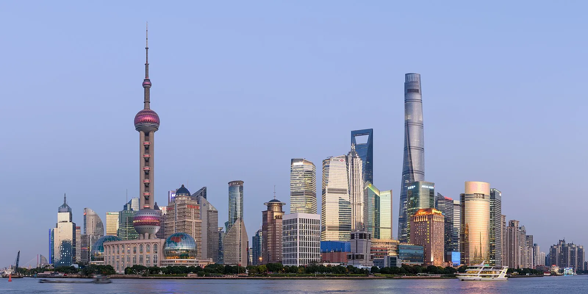
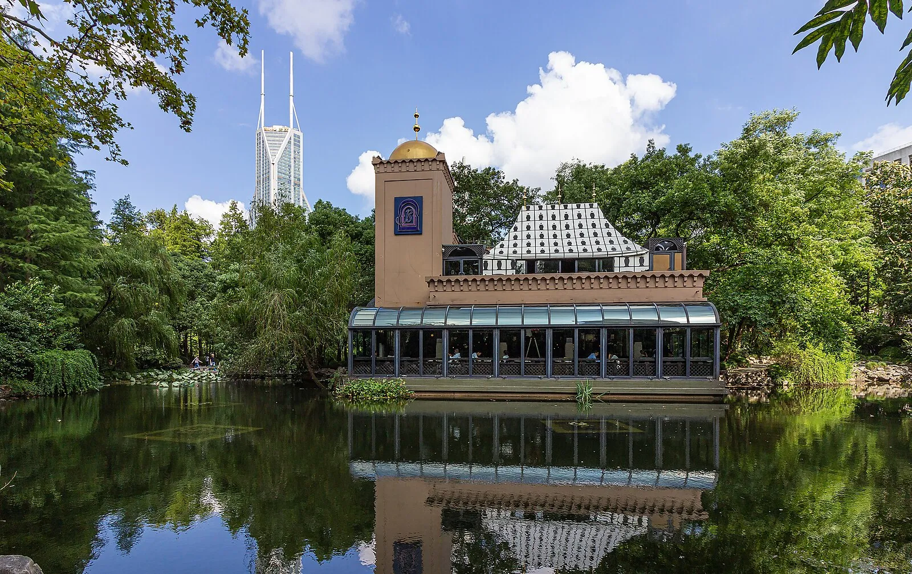
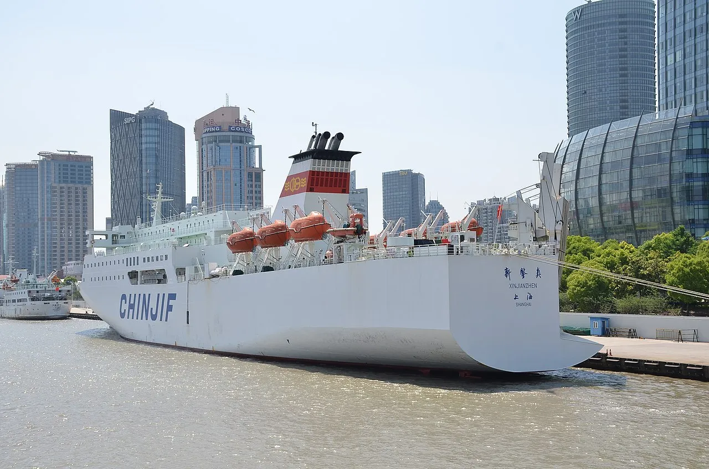

Last reviewed: February 2026
Shanghai Cruise Port Guide
My Futuristic Megacity That Leaves Me Speechless
Quick Answer: Shanghai scores 4.8 out of 5 stars as the perfect marriage of 1930s Art Deco glamour and futurism. Must-dos: The Bund at sunrise, Shanghai Tower observatory ($33 fee), Yu Garden ($6 admission), xiaolongbao dumplings ($8 per basket), and French Concession. The pier facility is wheelchair accessible, and the metro system has good mobility support throughout the city.
My Shanghai Day – A First-Person Account

Every time our Royal Caribbean ship sails up the Huangpu River at dawn and the skyscrapers of the Bund and Pudong appear like a scene from Blade Runner, I honestly pinch myself. Shanghai is one of the most mind-blowing Asian ports because it is the perfect marriage of 1930s Art Deco glamour and futurism that I have ever witnessed with my own eyes.
My perfect day starts early: I am off the ship and straight to The Bund for that iconic sunrise photo with the colonial buildings on one side and the rocket-ship skyline on the other. The cool morning breeze off the river felt crisp against my face as I walked the promenade. The Bund is Shanghai's protected historical waterfront district along the western bank of the Huangpu River, and walking that mile-long promenade feels like strolling through what they call a "museum of buildings" — fifty-two architectural masterpieces from the 1860s to 1930s, when this was the rich and powerful center of the foreign establishment in China's legally protected treaty port. I always linger in front of the HSBC Building at No. 12 (completed 1923, once proclaimed "the most luxurious building from the Suez Canal to the Bering Strait") and the Customs House at No. 13 with its clock tower modeled after Big Ben — the chimes still ring out across the water just like they did in 1927. I heard those deep, resonant bells echoing through the morning air, and for a moment time collapsed entirely. Gothic spires, Baroque domes, Neoclassical columns, Romanesque arches, Art Deco flourishes, Renaissance details — every style of Western architecture stands shoulder to shoulder here, and I never tire of it.

Then I take the ferry ($0.50!) across to Pudong and the contrast hits me like a physical force — suddenly I am standing beneath the futuristic skyline that makes The Bund look quaint. However, even with all the modernity towering above me, I noticed elderly couples doing tai chi in the park below the towers, and the scent of fresh jianbing crepes drifted up from a sidewalk vendor's cart. The Oriental Pearl Tower with its pink spheres, the Shanghai Tower soaring 632 meters as the world's second-tallest building (locals call it the "lucky dragon" for its twisting form), and the World Finance Center Tower that everyone affectionately nicknames "the giant bottle opener" — this is where the 21st century lives. I ride the elevator to the 118th-floor observatory in the Shanghai Tower, and on a clear day I can see 50 kilometers in every direction, the old Chinese city and the French Concession spreading out like a living map below. Breakfast is always xiaolongbao soup dumplings at Din Tai Fung — I tasted that savory, rich broth exploding from the delicate wrapper and my eyes watered from the sheer, overwhelming perfection of it.
Then I head to Yu Garden (Yuyuan), and stepping through those gates is like entering a different century entirely — although the crowds can be dense, the beauty of this place still manages to overwhelm my senses. This classical Chinese garden was built in 1559 during the Ming Dynasty, then lovingly restored in 1784, and every element of classical Chinese landscaping is here: elegant pavilions with upturned eaves, tranquil koi ponds reflecting the sky, intricate rockeries that look like miniature mountains. The famous Huxinting Teahouse sits on a platform overlooking the central pond, connected by that zigzagging nine-turn bridge (evil spirits can only travel in straight lines, the story goes), and sipping warm jasmine tea there while watching the koi glide beneath me is pure serenity. I felt the smooth, sun-warmed stone railing beneath my fingers and watched golden koi drift through water dappled with light. After that I usually visit the Propaganda Poster Art Centre (hidden in a residential basement — chilling and fascinating), then Nanjing Road pedestrian street for people-watching, and finally the French Concession for those plane-tree-lined streets that make you forget you are in China.
The moment that stays with me: Standing on The Bund at sunrise with the colonial buildings behind me and Pudong's futuristic skyline ahead, I watched an elderly man beside me whispered something to his wife, and she reached for his hand. They stood there together in quiet grace, looking out at the city they had watched transform over a lifetime. Something shifted inside me — Shanghai does not just bridge past and future, it makes you feel like you are standing in both at once. My breath caught, and for the first time in years I understood that the real gift of travel is not the places themselves but the way they crack you open to wonder.Lunch is hairy crab in season or spicy Sichuan hotpot — the rich, peppery aroma filled the entire restaurant and I could smell it from the street. Despite the overwhelming size of Shanghai, I discovered that its neighborhoods are surprisingly intimate when you slow down. Afternoon options: Zhujiajiao water town (the "Venice of Shanghai") or the Power Station of Art contemporary museum. Yet the real surprise is the evening — the Bund lights up in a neon symphony and the skyline reflects across the Huangpu like a painting come alive.
Looking back, I realized that Shanghai taught me something I did not expect. In a city racing toward tomorrow at impossible speed, the most meaningful moments were the quiet ones — a cup of tea in a 500-year-old garden, the sound of Big Ben's echo from a 1927 clock tower, an elderly couple holding hands before a skyline they barely recognize. What matters is not keeping pace with the future but pausing long enough to notice what endures. I learned that the most futuristic thing a city can do is remember who it was.
The Cruise Port
Shanghai's primary cruise facility is the Shanghai Wusongkou International Cruise Terminal in the Baoshan district, located at the confluence of the Yangtze and Huangpu rivers. This modern terminal handles most large cruise ships including Royal Caribbean's Spectrum of the Seas and similar mega-ships. The terminal building itself is spacious with air conditioning, seating areas, restrooms, and a small duty-free area. Immigration and customs processing is generally efficient, though bringing your passport and any required visa documentation is essential. The terminal area has limited dining options, so I recommend eating aboard the ship before disembarking. Taxis queue outside the terminal, and the cost to reach the Bund is approximately $15 to $20. Many cruise lines offer shuttle buses to central Shanghai for around $25 per person round trip. The terminal is wheelchair accessible with ramps and elevators throughout the facility. A secondary terminal, the Shanghai Port International Cruise Terminal on the North Bund, is closer to the city center but used less frequently for larger vessels.
Getting Around
Spectrum of the Seas and larger ships dock at the Shanghai Wusongkou International Cruise Terminal (Baoshan) — about 45 to 60 minutes by taxi from The Bund. Royal Caribbean usually runs shuttle buses for approximately $25 per person round trip. Smaller ships sometimes use the older North Bund terminal closer to the city center.
The Shanghai Metro is my top recommendation for independent exploration. It is one of the world's largest metro systems with over 800 kilometers of track. A single ride costs $0.50 to $1.50 depending on distance, and station signage is bilingual in Chinese and English. From Baoshan, take Line 3 south to connect with other lines. The metro is fully accessible with elevators at every station, making it suitable for travelers with mobility challenges or those using wheelchairs. However, be prepared for crowded trains during peak hours — avoid the 7:30 to 9:00 AM and 5:00 to 7:00 PM rush if possible.
Taxis are affordable — a fare from the cruise terminal to The Bund runs about $15 to $20. Download the DiDi app (China's version of Uber) for easier ride-hailing, though note that it requires a Chinese phone number or international registration. For a unique experience, the Shanghai Maglev Train reaches speeds of 431 km/h and connects Pudong Airport to the metro network, though it is not directly useful from the cruise terminal. Walking is excellent once you reach the city center, particularly along The Bund, through the French Concession, and around Yu Garden.
Weather & Best Time to Visit
Port Map
Explore Shanghai's cruise terminal, The Bund, historic districts, and dining spots. Click markers for details and directions.
Top Excursions and Attractions

The Bund and Pudong Skyline Walk (low-energy, independent): This is the essential Shanghai experience and completely free to enjoy. Walk the mile-long waterfront promenade from the Waibaidu Bridge south to the Meteorological Signal Tower. Cross via the Bund Sightseeing Tunnel ($8 round trip) or the local ferry ($0.50) to Pudong for the futuristic skyline. The Shanghai Tower observation deck costs $33 and is worth every penny for the view. Allow 3 to 4 hours for both sides. This route is largely flat and accessible for travelers with limited mobility.
Yu Garden and Old City (moderate walking, independent or ship excursion): The 400-year-old Yu Garden admission is $6 in low season and $9 in peak season. Budget an additional $5 to $15 for tea at the Huxinting Teahouse. The surrounding bazaar area is free to explore and offers souvenirs, street food, and architecture. A ship excursion to Yu Garden typically costs $80 to $120 per person and includes a guaranteed return to the ship. I prefer going independently via metro Line 10 to Yu Garden Station, which saves considerable cost. Allow 2 to 3 hours for the garden and surrounding area.
French Concession Walking Tour (moderate walking, independent): Wander the plane-tree-lined avenues of the former French Concession, exploring boutique cafes, vintage shops, and colonial-era architecture. Start at Fuxing Park and walk along Wukang Road to see the Normandie Apartments and other Art Deco gems. Most cafes charge $4 to $8 for coffee. A guided walking tour through a local operator costs about $30 to $50 per person. This area has smooth, flat sidewalks and is accessible for wheelchair users, though some heritage buildings may have steps.

Zhujiajiao Water Town (high-energy half day, book ahead): Known as the "Venice of Shanghai," this 1,700-year-old water town is located about 50 kilometers west of the city. A ship excursion typically costs $100 to $150 per person with guaranteed return to the port. Going independently by taxi costs roughly $30 each way. Boat rides through the canals run about $10 per person. The ancient stone bridges, waterside teahouses, and narrow alleyways offer a glimpse of pre-modern China that contrasts dramatically with the Pudong skyline. Allow a full half day including travel time.
Jade Buddha Temple (low-energy, independent): This active Buddhist temple houses two stunning jade Buddha statues brought from Burma in 1882. Admission is $4. The temple is serene and offers a spiritual counterpoint to Shanghai's commercial energy. Reach it via metro Line 7 to Changshou Road station. The main halls are accessible, though some upper areas have stairs.
Booking guidance: For attractions within central Shanghai (The Bund, Yu Garden, French Concession), I strongly recommend going independent — the metro is efficient and you will save $50 to $80 per person compared to a ship excursion. For Zhujiajiao Water Town or any destination more than 30 minutes from port, consider a ship excursion for the guaranteed return to the ship before sailing. Book ahead for the Shanghai Tower observation deck during peak season, as lines can exceed 90 minutes without a reservation.
Depth Soundings Ashore

The honest story about Shanghai is that its sheer scale can overwhelm even experienced travelers. The Baoshan cruise terminal is genuinely far from the main attractions — budget 45 to 60 minutes each way in a taxi, and potentially longer if traffic is heavy. Despite the distance, the journey is worth every minute once you arrive in the city center. The language barrier is real — fewer people speak English here than in Hong Kong or Singapore, though the younger generation in tourist areas often can help. Download a translation app and have your hotel or destination written in Chinese characters to show taxi drivers.
The air quality varies significantly by season and day. Winter months (November through February) tend to have more haze, though conditions have improved dramatically in recent years. Summer brings oppressive humidity and temperatures above 35 degrees Celsius, making outdoor walking strenuous. Yet even on difficult days, Shanghai rewards those who push through the discomfort — the energy of this city is unlike anything else in Asia. The cost of a port day is reasonable: budget roughly $40 to $80 per person for transportation, meals, and admission fees if exploring independently. Plan your time carefully, prioritize two or three areas rather than trying to see everything, and save energy for the Bund light show at dusk — it is the perfect farewell to a city that never stops reaching for tomorrow.
Practical Information
Currency: Chinese Yuan (CNY/RMB). ATMs are widely available. Many places accept WeChat Pay and Alipay, but cash is essential for smaller vendors and taxis.
Language: Mandarin Chinese. English is limited outside major tourist areas. Translation apps are very helpful.
Visa: Most cruise passengers qualify for the 144-hour visa-free transit policy when arriving and departing from Shanghai. Check current requirements for your nationality before sailing.
Internet: A VPN is needed to access Google, Facebook, Instagram, and other Western services. Download and configure your VPN before arriving in China.
Photo Gallery

Image Credits
- shanghai-1.webp: WikiMedia Commons (CC BY-SA)
- shanghai-2.webp: WikiMedia Commons (CC BY-SA)
- shanghai-3.webp: WikiMedia Commons (CC BY-SA)
- shanghai-4.webp: WikiMedia Commons (CC BY-SA)
- shanghai-5.webp: WikiMedia Commons (CC BY-SA)
- shanghai-6.webp: WikiMedia Commons (CC BY-SA)
- shanghai-7.webp: WikiMedia Commons (CC BY-SA)
- shanghai-8.webp: WikiMedia Commons (CC BY-SA)
Images sourced from WikiMedia Commons under Creative Commons licenses.
Frequently Asked Questions
How do I get from the cruise terminal to The Bund?
The Baoshan terminal is 45 to 60 minutes from The Bund. Use the ship's shuttle (approximately $25 round trip), taxi ($15 to $20 one way), or combine metro lines. Download DiDi (Chinese ride-hailing app) or have your destination written in Chinese characters for the taxi driver.
Is one day enough for Shanghai?
You can hit the highlights (Bund, Shanghai Tower, Yu Garden, French Concession) in one day, but Shanghai deserves more time. Focus on 2 to 3 areas rather than trying to see everything. Prioritize based on your interests and mobility level — the city is very spread out.
Where should I get xiaolongbao dumplings?
Din Tai Fung is consistently excellent, with baskets priced at $8 to $12. For a more local experience, try Jia Jia Tang Bao near Yu Garden where baskets cost $4 to $6. Eat them hot — bite a small hole, sip the soup, then eat the dumpling whole.
Do I need a visa for China?
Most cruise passengers can use the 144-hour visa-free transit policy if arriving and departing from Shanghai. Check current requirements for your nationality before sailing. Keep your boarding pass and next-port documentation handy for immigration.
Is Shanghai accessible for visitors with mobility needs?
The metro system has elevators at every station and is generally accessible. The Bund promenade is flat and smooth. Yu Garden has some uneven surfaces. The cruise terminal itself is fully wheelchair accessible. Taxis can accommodate folding wheelchairs. Consider a ship excursion with accessible transport if you have significant mobility limitations.
What should I budget for a day in Shanghai?
A budget day exploring independently runs about $40 to $60 per person including transportation ($15 to $25), meals ($10 to $20), and one major attraction admission ($6 to $33). Ship excursions range from $80 to $150 per person depending on the itinerary.